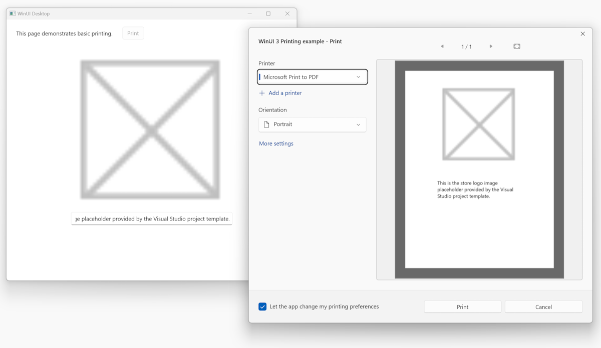

Print from your app
This topic describes how to print from a Windows app.
For more advanced features, see Customize the print preview UI.
Register for printing
The first step to add printing to your app is to register for printing by getting the PrintManager object for the current window. The PrintManager class is responsible for orchestrating the printing flow for your app. To use this class, you must first call the method that returns the PrintManager object that is specific to the current active window.
- In a non-UWP app, use the PrintManagerInterop.GetForWindow method.
- In a UWP app, use the PrintManager.GetForCurrentView method.
Your app must do this on every screen from which you want your user to be able to print. Only the screen that is displayed to the user can be registered for printing. If one screen of your app has registered for printing, it must unregister for printing when it exits. If it is replaced by another screen, the next screen must register for printing when it opens.
Tip
If you need to support printing from more than one page in your app, you can put this print code in a common helper class and have your app pages reuse it. For an example of how to do this, see the PrintHelper class in the UWP print sample.
After a user has initiated printing, you use a PrintDocument to prepare the pages to be sent to the printer.The PrintDocument type is in the Microsoft.UI.Xaml.Printing namespace along with other types that support preparing XAML content for printing.
The PrintDocument class is used to handle much of the interaction between the app and the PrintManager, but it exposes several callbacks of its own. During registration, create instances of PrintManager and PrintDocument and register handlers for their printing events.
In this example, registration is performed in the RegisterForPrinting method, which is called from the page's Loaded event handler.
using Microsoft.UI.Xaml.Printing;
using Windows.Graphics.Printing;
PrintDocument printDocument = null;
IPrintDocumentSource printDocumentSource = null;
List<UIElement> printPreviewPages = new List<UIElement>();
private void MainPage_Loaded(object sender, RoutedEventArgs e)
{
RegisterForPrinting();
}
private void RegisterForPrinting()
{
var hWnd = WinRT.Interop.WindowNative.GetWindowHandle(App.MainWindow);
PrintManager printManager = PrintManagerInterop.GetForWindow(hWnd);
printManager.PrintTaskRequested += PrintTask_Requested;
printDocument = new PrintDocument();
printDocumentSource = printDocument.DocumentSource;
printDocument.Paginate += PrintDocument_Paginate;
printDocument.GetPreviewPage += PrintDocument_GetPreviewPage;
printDocument.AddPages += PrintDocument_AddPages;
}
Warning
In UWP printing examples, it's recommended to register for printing from the OnNavigatedTo method override. In non-UWP apps, you need to use the window handle in the PrintManagerInterop.GetForWindow call, so you should use the Loaded event to ensure that the window handle is not null, which might be the case in OnNavigatedTo.
Here, the event handlers are unregistered in the UnregisterForPrinting method, which is called from the OnNavigatedFrom method.
protected override void OnNavigatedFrom(NavigationEventArgs e)
{
base.OnNavigatedFrom(e);
UnregisterForPrinting();
}
private void UnregisterForPrinting()
{
if (printDocument == null)
{
return;
}
printDocument.Paginate -= PrintDocument_Paginate;
printDocument.GetPreviewPage -= PrintDocument_GetPreviewPage;
printDocument.AddPages -= PrintDocument_AddPages;
var hWnd = WinRT.Interop.WindowNative.GetWindowHandle(App.MainWindow);
PrintManager printManager = PrintManagerInterop.GetForWindow(hWnd);
printManager.PrintTaskRequested -= PrintTask_Requested;
}
Note
If you have a multiple-page app and don't disconnect printing, an exception is thrown when the user leaves the page and then returns to it.
Create a print button
Add a print button to your app's screen where you'd like it to appear. Make sure that it doesn't interfere with the content that you want to print.
<Button x:Name="InvokePrintingButton"
Content="Print"
Click="InvokePrintingButton_Click"/>
In the Button's Click event handler, show the Windows print UI to the user.
- In a non-UWP app, use the PrintManagerInterop.ShowPrintUIForWindowAsync method.
- In a UWP app, use the PrintManager.ShowPrintUIAsync method.
var hWnd = WinRT.Interop.WindowNative.GetWindowHandle(App.MainWindow);
await PrintManagerInterop.ShowPrintUIForWindowAsync(hWnd);
This method is an asynchronous method that displays the appropriate printing window, so you'll need to add the async keyword to the Click handler. We recommend calling the IsSupported method first in order to check that the app is being run on a device that supports printing (and handle the case in which it is not). If printing can't be performed at that time for any other reason, the method will throw an exception. We recommend catching these exceptions and letting the user know when printing can't proceed.
In this example, a print window is displayed in the event handler for a button click. If the method throws an exception (because printing can't be performed at that time), a ContentDialog control informs the user of the situation.
private async void InvokePrintingButton_Click(object sender, RoutedEventArgs e)
{
if (PrintManager.IsSupported())
{
try
{
// Show system print UI.
var hWnd = WinRT.Interop.WindowNative.GetWindowHandle(App.MainWindow);
await Windows.Graphics.Printing.PrintManagerInterop.ShowPrintUIForWindowAsync(hWnd);
}
catch
{
// Printing cannot proceed at this time.
ContentDialog noPrintingDialog = new ContentDialog()
{
Title = "Printing error",
Content = "\nSorry, printing can' t proceed at this time.",
PrimaryButtonText = "OK"
};
await noPrintingDialog.ShowAsync();
}
}
else
{
// Printing is not supported on this device.
ContentDialog noPrintingDialog = new ContentDialog()
{
Title = "Printing not supported",
Content = "\nSorry, printing is not supported on this device.",
PrimaryButtonText = "OK"
};
await noPrintingDialog.ShowAsync();
}
}
Format your app's content
When ShowPrintUIForWindowAsync is called, the PrintTaskRequested event is raised. In the PrintTaskRequested event handler, you create a PrintTask by calling the PrintTaskRequest.CreatePrintTask method. Pass the title for the print page and the name of a PrintTaskSourceRequestedHandler delegate. The title is shown in the print preview UI. The PrintTaskSourceRequestedHandler links the PrintTask with the PrintDocument that will provide the content.
In this example, a completion handler is also defined to catch errors. It's a good idea to handle completion events because then your app can let the user know if an error occurred and provide possible solutions. Likewise, your app could use the completion event to indicate subsequent steps for the user to take after the print job is successful.
private void PrintTask_Requested(PrintManager sender, PrintTaskRequestedEventArgs args)
{
// Create the PrintTask.
// Defines the title and delegate for PrintTaskSourceRequested.
PrintTask printTask = args.Request.CreatePrintTask("WinUI 3 Printing example", PrintTaskSourceRequested);
// Handle PrintTask.Completed to catch failed print jobs.
printTask.Completed += PrintTask_Completed;
DispatcherQueue.TryEnqueue(DispatcherQueuePriority.Normal, () =>
{
InvokePrintingButton.IsEnabled = false;
});
}
private void PrintTaskSourceRequested(PrintTaskSourceRequestedArgs args)
{
// Set the document source.
args.SetSource(printDocumentSource);
}
private void PrintTask_Completed(PrintTask sender, PrintTaskCompletedEventArgs args)
{
string StatusBlockText = string.Empty;
// Notify the user if the print operation fails.
if (args.Completion == PrintTaskCompletion.Failed)
{
StatusBlockText = "Failed to print.";
}
else if (args.Completion == PrintTaskCompletion.Canceled)
{
StatusBlockText = "Printing canceled.";
}
else
{
StatusBlockText = "Printing completed.";
}
DispatcherQueue.TryEnqueue(DispatcherQueuePriority.Normal, () =>
{
StatusBlock.Text = StatusBlockText;
InvokePrintingButton.IsEnabled = true;
});
}
After the print task is created, the PrintManager requests a collection of print pages to show in the print preview UI by raising the Paginate event. (This corresponds with the Paginate method of the IPrintPreviewPageCollection interface.) The event handler you created during registration is called at this time.
Important
If the user changes print settings, the paginate event handler will be called again to allow you to reflow the content. For the best user experience, we recommend checking the settings before you reflow the content and avoid reinitializing the paginated content when it's not necessary.
In the Paginate event handler, create the pages to show in the print preview UI and to send to the printer. The code you use to prepare your app's content for printing is specific to your app and the content you print.
This example shows the basic steps to create a single print page that prints an image and caption from the page shown on the screen.
- Create a list to hold the UI elements (pages) to be printed.
- Clear the list of preview pages so that pages aren't duplicated each time pagination occurs.
- Use the PrintPageDescription to get the size of the printer page.
- Format your XAML content to fit the printer page. Each page to be printed is a XAML UI element (typically a container element that contains other content). In this example, elements are created in code and use the same data as the elements shown on the screen.
- Flow the content onto additional pages as needed. Multiple pages are not shown in this basic example, but dividing the content into pages is an important part of the Paginate event.
- Add each page to the list of pages to print.
- Set the count of preview pages on the PrintDocument.
List<UIElement> printPreviewPages = new List<UIElement>();
private void PrintDocument_Paginate(object sender, PaginateEventArgs e)
{
// Clear the cache of preview pages.
printPreviewPages.Clear();
// Get the PrintTaskOptions.
PrintTaskOptions printingOptions = ((PrintTaskOptions)e.PrintTaskOptions);
// Get the page description to determine the size of the print page.
PrintPageDescription pageDescription = printingOptions.GetPageDescription(0);
// Create the print layout.
StackPanel printLayout = new StackPanel();
printLayout.Width = pageDescription.PageSize.Width;
printLayout.Height = pageDescription.PageSize.Height;
printLayout.BorderBrush = new Microsoft.UI.Xaml.Media.SolidColorBrush(Microsoft.UI.Colors.Black);
printLayout.BorderThickness = new Thickness(48);
Image printImage = new Image();
printImage.Source = printContent.Source;
printImage.Width = pageDescription.PageSize.Width / 2;
printImage.Height = pageDescription.PageSize.Height / 2;
TextBlock imageDescriptionText = new TextBlock();
imageDescriptionText.Text = imageDescription.Text;
imageDescriptionText.FontSize = 24;
imageDescriptionText.HorizontalAlignment = HorizontalAlignment.Center;
imageDescriptionText.Width = pageDescription.PageSize.Width / 2;
imageDescriptionText.TextWrapping = TextWrapping.WrapWholeWords;
printLayout.Children.Add(printImage);
printLayout.Children.Add(imageDescriptionText);
// Add the print layout to the list of preview pages.
printPreviewPages.Add(printLayout);
// Report the number of preview pages created.
PrintDocument printDocument = (PrintDocument)sender;
printDocument.SetPreviewPageCount(printPreviewPages.Count,
PreviewPageCountType.Intermediate);
}
Here's a screenshot of the app UI and how the content appears in the print preview UI.

When a particular page is to be shown in the print preview window, the PrintManager raises the GetPreviewPage event. This corresponds with the MakePage method of the IPrintPreviewPageCollection interface. The event handler you created during registration is called at this time.
In the GetPreviewPage event handler, set the appropriate page on the print document.
private void PrintDocument_GetPreviewPage(object sender, GetPreviewPageEventArgs e)
{
PrintDocument printDocument = (PrintDocument)sender;
printDocument.SetPreviewPage(e.PageNumber, printPreviewPages[e.PageNumber - 1]);
}
Finally, once the user clicks the print button, the PrintManager requests the final collection of pages to send to the printer by calling the MakeDocument method of the IDocumentPageSource interface. In XAML, this raises the AddPages event. The event handler you created during registration is called at this time.
In the AddPages event handler, add pages from the page collection to the PrintDocument object to be sent to the printer. If a user specifies particular pages or a range of pages to print, you use that information here to add only the pages that will actually be sent to the printer.
private void PrintDocument_AddPages(object sender, AddPagesEventArgs e)
{
PrintDocument printDocument = (PrintDocument)sender;
// Loop over all of the preview pages and add each one to be printed.
for (int i = 0; i < printPreviewPages.Count; i++)
{
printDocument.AddPage(printPreviewPages[i]);
}
// Indicate that all of the print pages have been provided.
printDocument.AddPagesComplete();
}